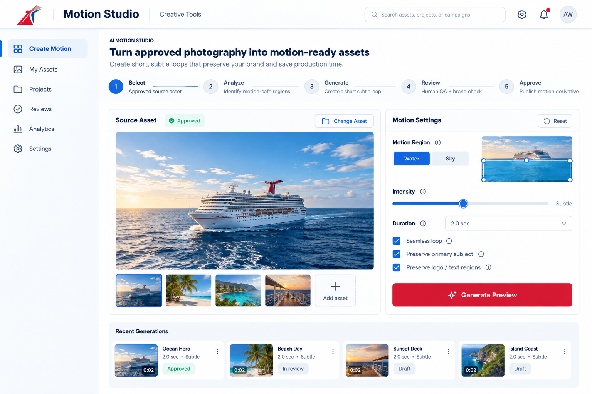

Design engineering
Case study
A human-directed, AI-assisted 0→1 product workflow
Opportunity
After a round of interviews, I was asked to show an example of how I use AI in my design work. Rather than create an AI demonstration in isolation, I used the request as an opportunity to identify a plausible product opportunity within the cruise industry and show how I move from an ambiguous idea to a working prototype.
I began with a short competitive analysis of the company and one of its competitors. Because I have previously worked as both a designer and developer in the cruise industry, I knew that one of its most abundant and valuable resources is professional photography.
How could newer AI capabilities create additional value from an asset library that already exists?
Research
I visually reviewed public-facing cruise-industry websites, looking for an opportunity that was useful, technically plausible, and small enough to demonstrate through a prototype.
Across the sites, I found extensive use of static photography. Some high-priority promotional experiences used video heavily, while many other pages depended primarily on still imagery. I also encountered older imagery whose resolution was beginning to show its age.
That suggested a focused opportunity: rather than generate entirely new visual content, could AI extend the value of already-approved professional photography?
I chose an image of a cruise ship with large areas of water and sky—natural regions where restrained ambient motion could be introduced while preserving the ship, branding, architecture, and original photographic intent.
HypothesisA user selects an approved image, AI identifies candidate motion regions, a restrained treatment is generated, and the workflow pauses for human review. Human judgment remains the approval boundary.
Visual language extraction
Because the prototype was intended to feel plausible within an existing company environment, I inspected the company’s public-facing interface and extracted a small set of recognizable visual cues rather than inventing a new visual system.
I inspected its CSS and interface treatments for primary action color, navigation color, background treatment, and button radius. I selectively applied the recognizable red action, blue interface language, pale-blue header treatment, and rounded CTA geometry.
I did not attempt to reproduce the company’s interface one-to-one or claim access to an internal design system. The goal was enough visual continuity for stakeholders to immediately understand the prototype in context.


Design to specification
AI exploration

I used a reasoning model to explore the opportunity and translate the initial idea into a low-fidelity interface concept. The output became an input into design decisions—not a finished design.
Human design

I sketched asset context, control placement, progress states, and the review sequence to decide what the prototype needed to communicate.
Figma


I converted the direction into a structured low-fidelity design with enough hierarchy, interaction, visual language, and state definition to support implementation.
Functional specification
I documented state, interaction rules, constrained controls, progress behavior, the human review boundary, accessibility, and what was outside prototype scope.
Agent handoff
The execution agent received the functional specification, visual state references, approved source asset, and repository context.
Rather than prescribe individual implementation steps, I established the sources of truth, constraints, intended behavior, and boundaries of the prototype. The agent was instructed to inspect the existing architecture, state its implementation plan, build the complete interaction, and verify the result.
The handoff intentionally left room for implementation decisions where the specification had already established sufficient intent.
Gaps discovered
Walking through the concept exposed requirements that were not obvious in the initial idea. The original flow focused on generation and approval, but a usable interaction required an empty state and an approved-asset selection flow.
The specification did not simply document a finished idea. It became a tool for discovering missing requirements before implementation.
ResultStructured conversations exposed tradeoffs earlier, preserved relevant context, and reduced ambiguity without treating AI output as authority.
Prototype walkthrough
After implementation, I performed the walkthrough as a reviewer rather than continuing to design through code. The working prototype supported approved-asset selection, source selection, AI-suggested motion regions, constrained intensity, simulated generation, animated progress, a mandatory Review pause, human approval, and a final Approved state.


The implementation was responsive and included semantic controls, focus behavior, status communication, and reduced-motion considerations. The walkthrough confirmed that the prototype communicated the product idea without requiring the full production system behind it.
Live prototype: Motion Studio
Motion Studio is a low-fidelity internal product concept for extending the value of approved photography through restrained AI-assisted motion.
A user selects an approved source image. The system identifies candidate regions such as water or sky and allows the user to select one. Motion intensity is deliberately constrained from Subtle to Restrained, and duration is fixed at 2.0 seconds.
Generate Preview moves the workflow into Processing and then stops at Review. The generated result cannot approve itself. A human must evaluate the result and explicitly select Approve before the workflow reaches its final state.
Findings / next iteration
Findings
The low-fidelity prototype demonstrated the core product hypothesis and the complete approval boundary. It showed that substantial interaction and implementation behavior can be evaluated before investing in a production AI pipeline.
- Responsive behavior and state transitions became testable
- Focus behavior and progress timing could be evaluated
- The relationship between generation and approval became tangible
Gaps
Several interactions were intentionally left outside the prototype because they were not necessary to prove the concept.
- No rejection or regeneration flow
- No editing, saving, versioning, or asset history
- No production segmentation or generative video processing
- Failure handling, performance, and delivery need validation
Where the execution agent extended the specification
The functional specification established the workflow through human approval, but I did not explicitly prescribe every presentation behavior after Approve. Using the state model, visual references, and surrounding context, the execution agent completed a presentation-ready Approved state, including the simulated subtle-motion treatment. This was not unrestricted invention; it was a missing local detail inferred from a strongly constrained product model.


Productive agent autonomy
When intent is underspecified, autonomous implementation can create unnecessary complexity or drift from the design problem. When context is sufficiently structured, an execution agent can resolve local implementation decisions without requiring every behavior to be individually prescribed.
The goal is not to remove human judgment. It is to preserve human judgment for the decisions where it matters and reduce the friction surrounding those decisions.
Protect the judgment.Reduce the friction around the judgment.
Reflection
This process changed how I think about AI-assisted prototyping. The speed of implementation was not simply the result of asking an agent to generate a prototype. Considerable work happened upstream: identifying the opportunity, researching the product environment, defining a plausible concept, exploring with AI, sketching, applying human design judgment, extracting an appropriate visual language, building the Figma states, walking through the interaction, discovering missing requirements, and writing the functional specification.
Once that ambiguity had been reduced, implementation became dramatically faster. The result was a working, reviewable, documented product direction rather than an isolated generated artifact.
“The value is not generation alone. It is the ability to move from an unclear idea to a working, reviewable, and documented product direction while preserving human judgment throughout the process.”